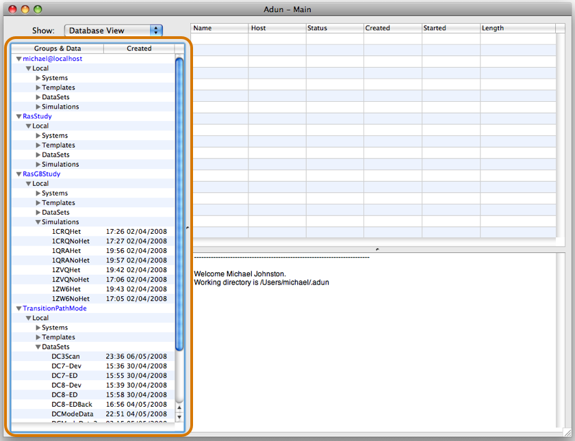

The Database Browser
Adun stores data in its own application specific databases. The information in these databases is like your music library in iTunes. The database browser is the main way to access this data in Adun and hence it occupies a prominent position on the left hand side of Adun's main window (see screenshot below)
Initially the browser only shows one database, called USER_NAME@localhost where USER_NAME is your user name. However you can add more databases if you want (see links below) and copy and move data between them using the commands in the Edit menu.
To operate on a piece of data simply highlight it in the browser. This makes it the 'active' object. Adun understands what you can do with the different data types so menu commands become available based on your current selection. Furthermore the commands that are available also depend on the currently active window (the front most one) - in essence the window checks what you have selected and activates different commands. For example if you select something, open the Analyser using 'Tools->Analsyer' (or bring it to the front if it's already open), and choose 'Object->Load', the analyser will load the selected data.
Although the browser is the main way to select data, the same principles apply when you select data anywhere e.g. in a relationship table or in the Analysers loaded objects table.
